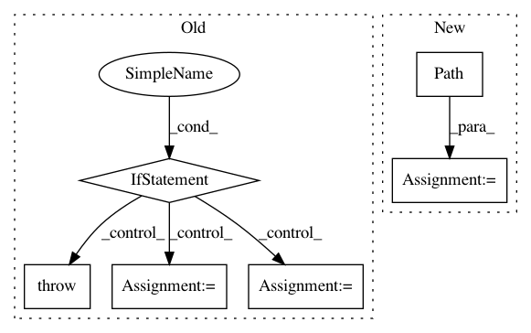

6ff2e7c602123787c3b0061466ab5bb8663eae81,pandas/_testing/contexts.py,,ensure_clean,#Any#Any#,76
Before Change
kwargs["suffix"] = filename
if return_filelike:
f = tempfile.TemporaryFile(**kwargs)
try:
yield f
finally:
f.close()
else:
// Don"t generate tempfile if using a path with directory specified.
if len(os.path.dirname(filename)):
raise ValueError("Can"t pass a qualified name to ensure_clean()")
try:
fd, filename = tempfile.mkstemp(**kwargs)
except UnicodeEncodeError:
import pytest
pytest.skip("no unicode file names on this system")
try:
yield filename
finally:
try:
os.close(fd)
except OSError:
print(f"Couldn"t close file descriptor: {fd} (file: {filename})")
try:
if os.path.exists(filename):
os.remove(filename)
except OSError as e:
print(f"Exception on removing file: {e}")
@contextmanager
def ensure_clean_dir():
Get a temporary directory path and agrees to remove on close.
After Change
Additional keywords are passed to open().
folder = Path(tempfile.gettempdir())
if filename is None:
filename = ""
filename = (
"".join(random.choices(string.ascii_letters + string.digits, k=30)) + filename
)
path = folder / filename
path.touch()
handle_or_str: Union[str, IO] = str(path)
if return_filelike:
kwargs.setdefault("mode", "w+b")
handle_or_str = open(path, **kwargs)
In pattern: SUPERPATTERN
Frequency: 3
Non-data size: 6
Instances
Project Name: pandas-dev/pandas
Commit Name: 6ff2e7c602123787c3b0061466ab5bb8663eae81
Time: 2021-01-18
Author: twoertwein@users.noreply.github.com
File Name: pandas/_testing/contexts.py
Class Name:
Method Name: ensure_clean
Project Name: matplotlib/matplotlib
Commit Name: 52136a7dda72978004f6af8e90e9ebe7596c27b8
Time: 2019-11-26
Author: anntzer.lee@gmail.com
File Name: examples/misc/image_thumbnail_sgskip.py
Class Name:
Method Name:
Project Name: deepmipt/DeepPavlov
Commit Name: 5390c650dadd1e86b6c43543ac0ed384e8ebfc4d
Time: 2018-05-15
Author: yoptar@gmail.com
File Name: deeppavlov/core/models/keras_model.py
Class Name: KerasModel
Method Name: save